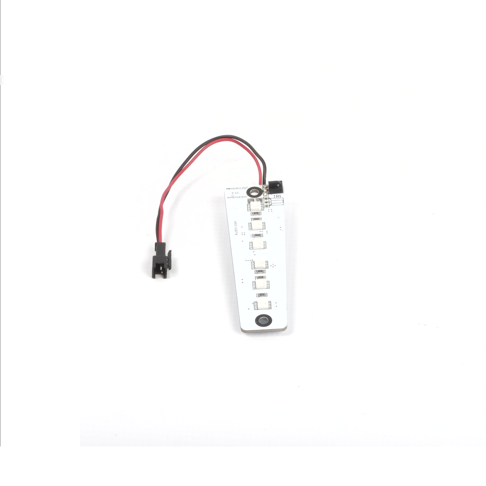
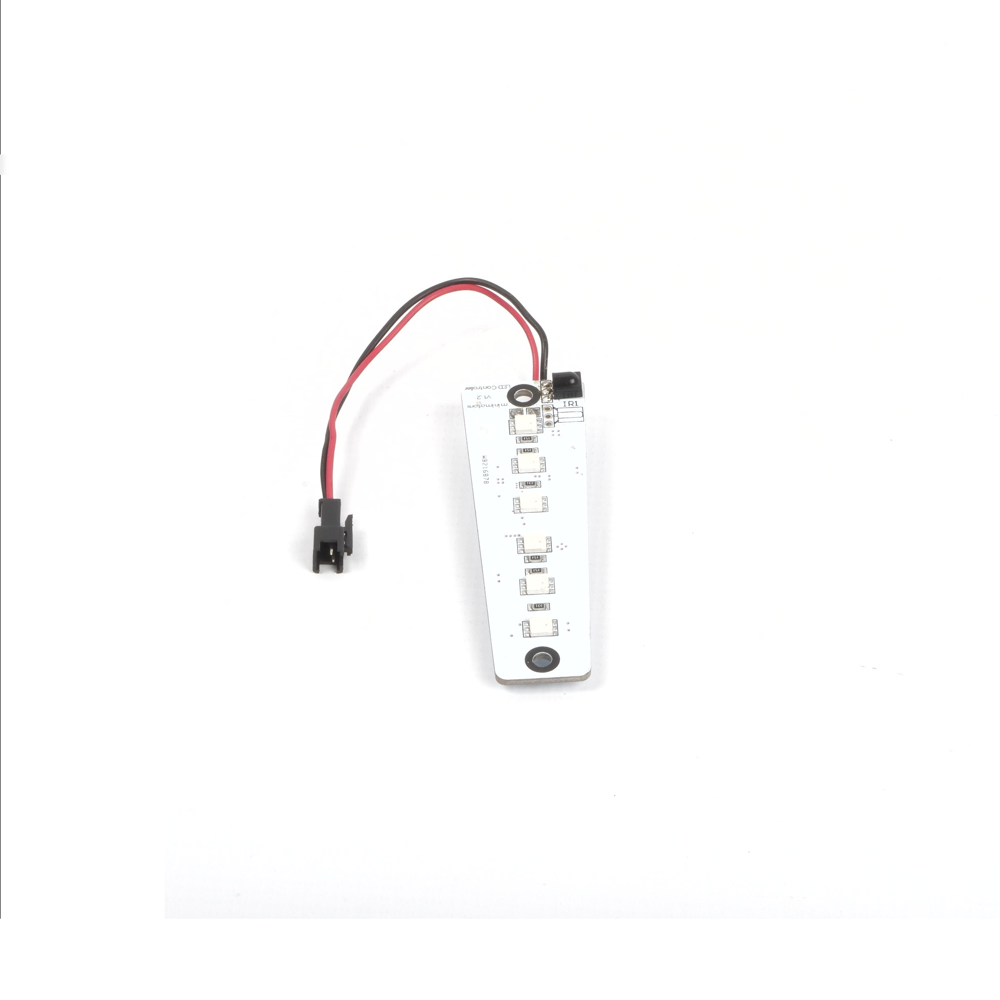
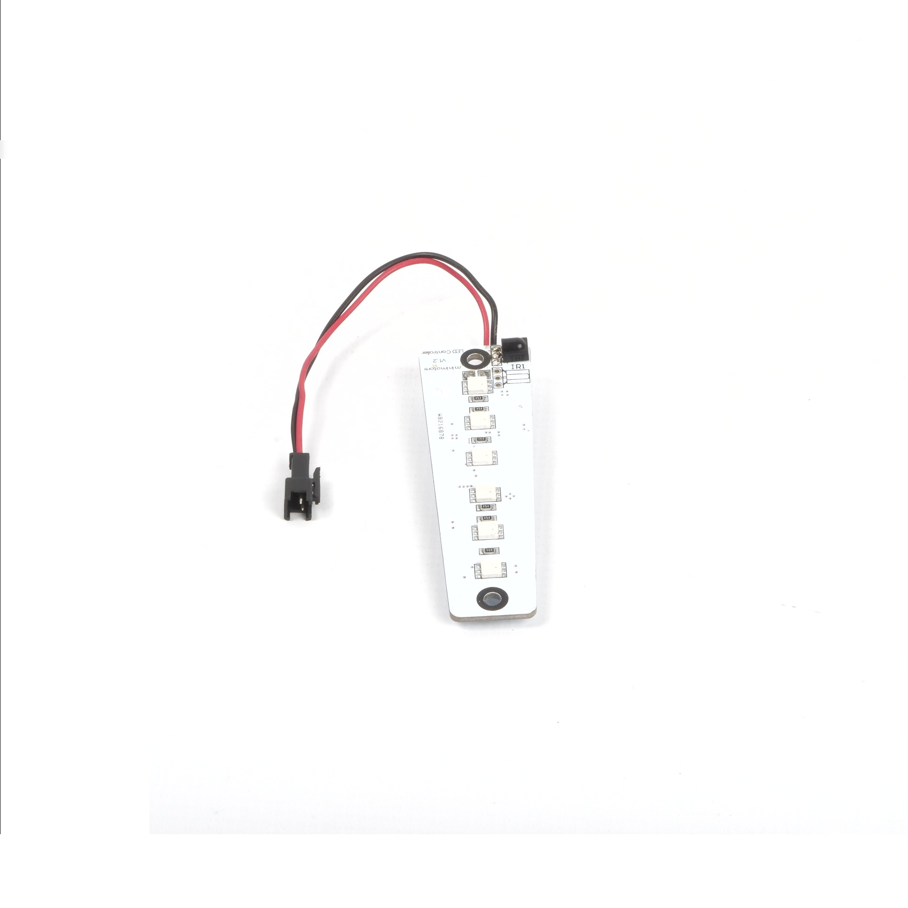

Before and after centering
TG's E-commerce photo cleaner is an experimental project on which I tested if I could clean ecommerce product photos. In order to do that I used my knowledge from computer vision studies and the openCV library.
This project offers the following functionnalities :
I used various method coming from computer vision such as global thresholding, adaptative tresholding and CLAHE algorithm. The results shown on this pages use adaptative thresholding. I still have to test canny edge detection, this page will be updated when I do so.
Contouring is the most important functionnality of this project, mainly because it is used for both object centering and background uniformization. An approximate contouring can be used for object centering but a very precise one is needed for background uniformization in order to avoid leftovers, often due to the object's shadow.
I tested global tresholding with Otsu's binarization and adaptative gaussian tresholding to get the contours of the object. Right now the best fit seems to be the adaptative gaussian tresholding, but it still isn't perfect and canny edge detection is left to be tested.
Object centering after contour detection is relatively easy, the pixels inside the contour are moved with the difference between the image's center and the contour's center.

As for object centering, the main difficulty of background uniformization is the contour detection. Once this is done, I replace every pixels outside of the contour with white pixels.
The illumination correction fix is in fact an improvement of the image's contrast. I used CLAHE algorithm in order to do this.